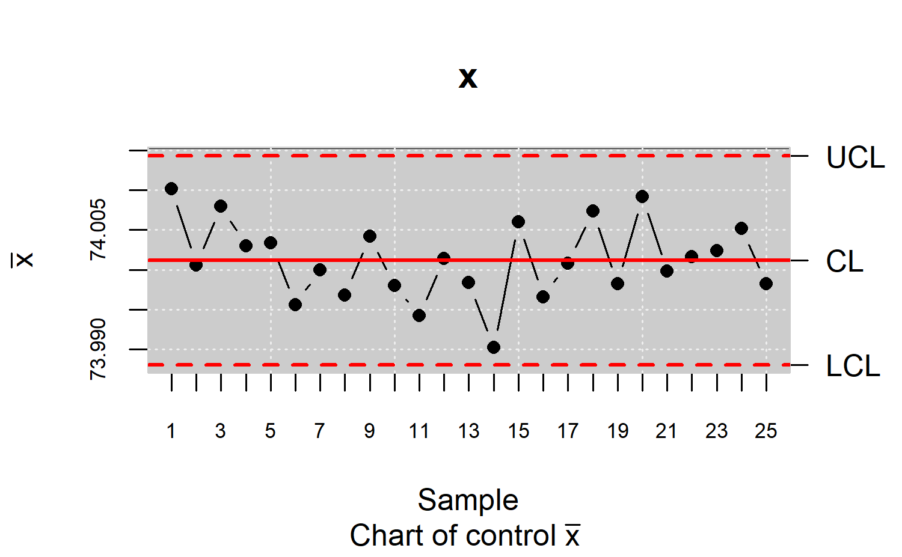
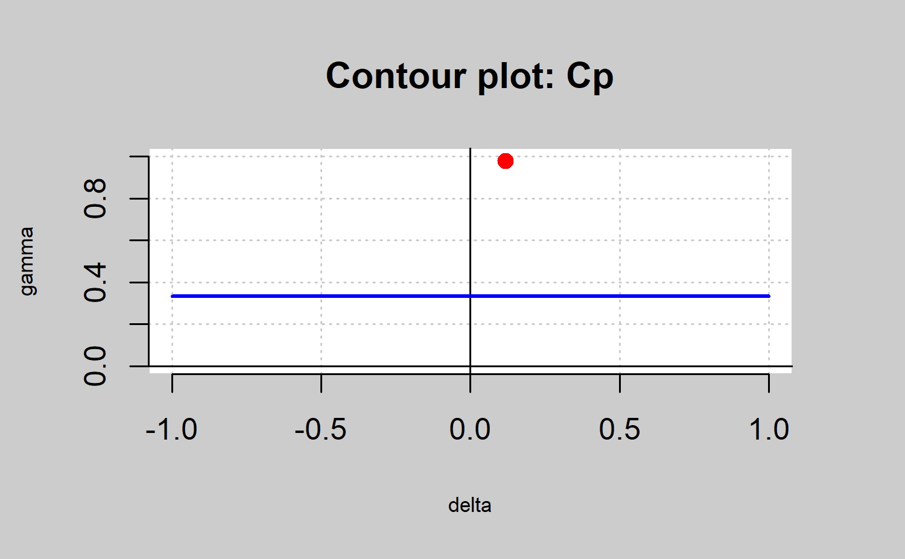
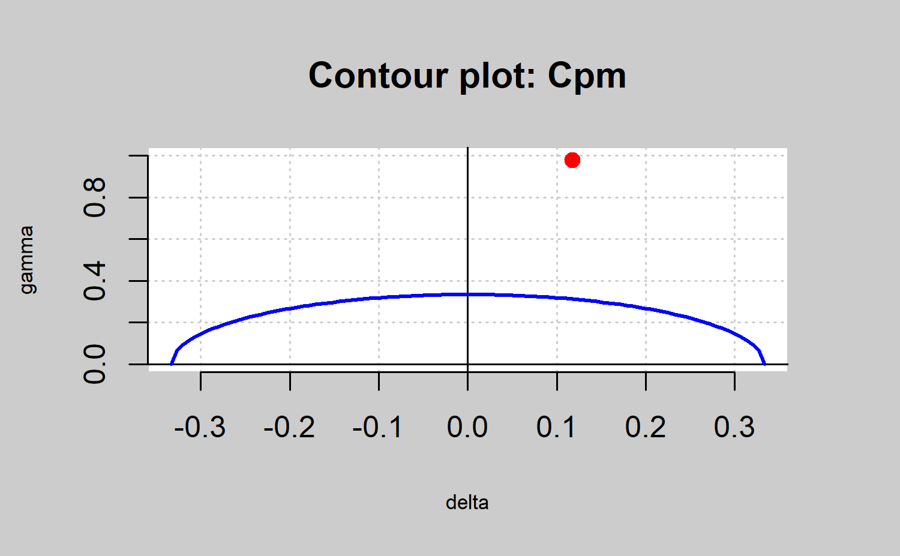
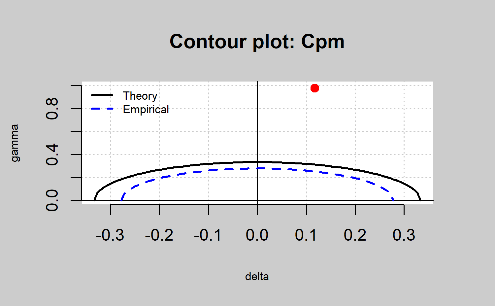
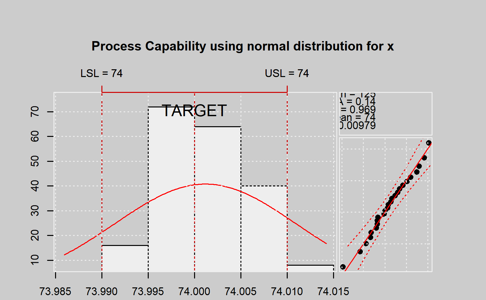
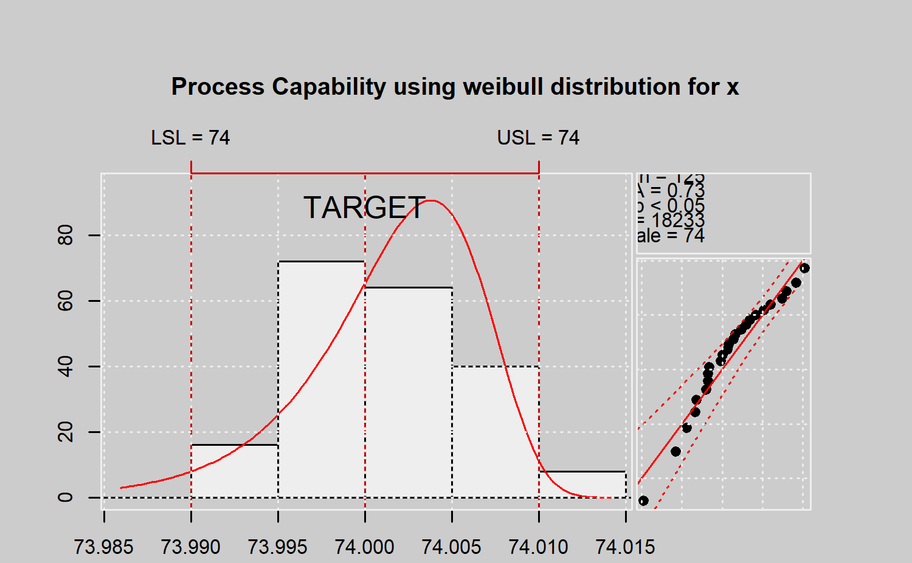
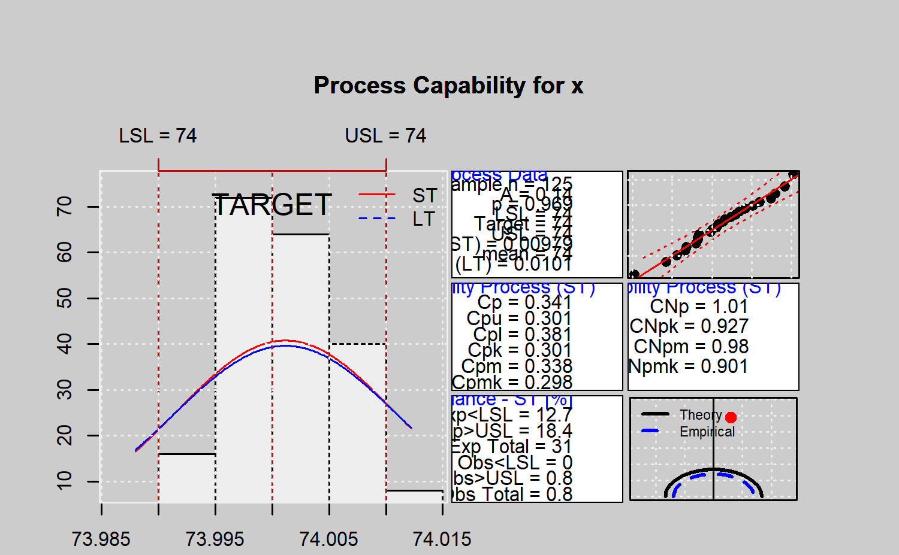

library(qcr)
#> Loading required package: qcc
#> Warning: package 'qcc' was built under R version 4.0.5
#> Package 'qcc' version 2.7
#> Type 'citation("qcc")' for citing this R package in publications.
#> Loading required package: fda.usc
#> Warning: package 'fda.usc' was built under R version 4.0.5
#> Loading required package: fda
#> Warning: package 'fda' was built under R version 4.0.5
#> Loading required package: splines
#> Loading required package: Matrix
#> Loading required package: fds
#> Warning: package 'fds' was built under R version 4.0.5
#> Loading required package: rainbow
#> Warning: package 'rainbow' was built under R version 4.0.5
#> Loading required package: MASS
#> Loading required package: pcaPP
#> Warning: package 'pcaPP' was built under R version 4.0.5
#> Loading required package: RCurl
#>
#> Attaching package: 'fda'
#> The following object is masked from 'package:graphics':
#>
#> matplot
#> Loading required package: mgcv
#> Loading required package: nlme
#> This is mgcv 1.8-31. For overview type 'help("mgcv-package")'.
#> ----------------------------------------------------------------------------------
#> Functional Data Analysis and Utilities for Statistical Computing
#> fda.usc version 2.0.2 (built on 2020-02-17) is now loaded
#> fda.usc is running sequentially usign foreach package
#> Please, execute ops.fda.usc() once to run in local parallel mode
#> Deprecated functions: min.basis, min.np, anova.hetero, anova.onefactor, anova.RPm
#> New functions: optim.basis, optim.np, fanova.hetero, fanova.onefactor, fanova.RPm
#> ----------------------------------------------------------------------------------
#> Loading required package: mvtnorm
#> Warning: package 'mvtnorm' was built under R version 4.0.5
#>
#> Package qcr: Quality Control Review
#> version 1.3 (built on 2021-05-14).
#> Copyright Miguel A. Flores Sanchez 2016-2021.Análisis de capacidad de un proceso
El análisis del capacidad de un proceso, en el caso del control de calidad se lo realiza a través del cálculo de índices que permiten medir si un proceso es o no capaz, relacionando las especificaciones técnicas que se debe cumplir (fijadas por el cliente ó fabricante) con la variabilidad del proceso. La interpretación de estos índices está asociada al resultado de dicha relación.
Los índices de capacidad se cálculan generalmente como la razón entre la magnitud del rango de variación de las especificaciones y la variabilidad del proceso en términos de \(\sigma\). En el caso de valores grandes de estos índices se tiene un proceso capaz de producir artículos que cumplen con los requerimientos del cliente. En otras palabras, cuánto más grande sea el valor que tome el índice de capacidad, más pequeña será la cantidad de productos fuera de los límites de especificación.
En esta sección se describirán los índices de capacidad para procesos cuya distribución subyacente es normal y no normal(exponencial, weibull, etc.), además se presenta un método gráfico para ver si un proceso, con distribución normal, se puede considerar capaz y finalmente se describen índices de capacidad para distribuciones no normales.
Asumiendo una distribución normal
Los índices de capacidad más utilizados en la industria, analizan la capacidad del proceso bajo la suposición de que el proceso es estable y de que la característica estudiada se distribuye normalmente. En la Table~ se describen los índices \(C_p,C_{pk},C_{pm},C_{pmk}\) que se obtienen a partir de estos supuestos.
Kerstin Vannman (1995) propone una formulación general de estos índices mediante una expresión que permite obtenerlos para distintos valores de dos nuevos parámetros no negativos \(u\) y \(v\):
\[ C_p\left( u,v\right)= \frac{d-u\vert \mu - m\vert}{3\sqrt{\sigma^2+v\left( \mu - T\right)^2}}\]
Esta nueva expresión permite obtener los índices de Table~, sin más que considerar valores de 0 y 1 para \(u\) y \(v\): \(C_p\left( 0, 0\right) = C_p\), \(C_p\left( 1, 0\right) = C_{pk}\), \(C_p\left( 0, 1\right) = C_{pm}\), \(C_p\left( 1, 1\right) = C_{pmk}\).

mu <-xbar$center
std.dev <-xbar$std.dev
LSL=73.99; USL=74.01
qcs.cp(parameters = c(0,0),limits = c(LSL,USL),
mu = mu,std.dev = std.dev,ylim=c(0,1), contour = FALSE)
#> Cp delta gamma
#> 0.3407 0.1176 0.9785
qcs.cp(object = xbar,parameters = c(0,0), limits = c(LSL,USL),ylim=c(0,1), contour = FALSE)
#> Cp delta gamma
#> 0.3407 0.1176 0.9785
qcs.cp(object = xbar,parameters = c(1,0), limits = c(LSL,USL),ylim=c(0,1), contour = FALSE)
#> Cpk delta gamma
#> 0.3006 0.1176 0.9785
qcs.cp(object = xbar,parameters = c(0,1), limits = c(LSL,USL),ylim=c(0,1), contour = FALSE)
#> Cpm delta gamma
#> 0.3382 0.1176 0.9785
qcs.cp(object = xbar,parameters = c(1,1), limits = c(LSL,USL),ylim=c(0,1), contour = FALSE)
#> Cpmk delta gamma
#> 0.2984 0.1176 0.9785Gráfico de la capacidad del proceso
Deleryd y Vannman (1999) y Vannman (2001), (2006) propusieron un método gráfico basado en los índices de capacidad para analizar la capacidad de un proceso. La ventaja de usar este tipo de gráficos, comparado con utilizar sólo el índice de capacidad, es que los gráficos proporcionan información visual instantáneamente: información sobre la localización y variación de la característica estudiada del proceso e información sobre la capacidad del proceso.
Un proceso se dice que es capaz si el índice de capacidad del proceso excede un cierto valor k, donde k > 1. Algunos de los valores de k que más se usan son k = 1, k = 4/3, o k = 5/3. Se supondrá que el valor del target coincide con el centro del intervalo de especificación, es decir, \(T = \frac{\left( USL + LSL\right)}{2} = m\). Entonces, se utilizará uno de los índices definidos por la familia \(C_p\left( u,v\right)\)
por ejemplo, \(C_{pk}\) o \(C_{pm}\) y se definirá el proceso como capaz si \(C_p\left( u, v\right) > k\), dados los valores de u, v, y k. Notemos de nuevo que si \(\mu = T\), todos los índices \(C_p\left( u, v\right)\), se reducen al mismo,\(C_p\). Diferentes elecciones de u, v, y k imponen diferentes restricciones en los parámetros del proceso \(\left( \mu, \sigma \right)\). Esto se puede ver f´acilmente en un gr´afico de capacidades. Este gráfico es simplemente un gráfico de contorno de \(C_p\left( u, v\right) = k\) como una función de \(\mu\) y \(\sigma\), o como una función de \(\delta\) y \(\gamma\), donde \(\delta = \frac{\mu - T}{d}\) y \(\gamma = \frac{\sigma}{d}\).
La línea de contorno se obtiene reescribiento el índice \(C_p\left( u,v\right)\) como una función de \(\delta\) y \(\gamma\), resolviendo la ecuación \(C_p\left( u,v\right) = k\) con respecto a \(\gamma\), y graficando \(\gamma\) como una función de \(delta\). Se obtiene:
\[ \gamma = \sqrt{\frac{\left( 1-u\vert\delta\vert\right)}{9k^2}-v\delta^2}, \; \vert\delta\vert \leq \frac{1}{u+3k\sqrt{v}}, \; \left( u,v\right) \neq \left(0,0 \right). \]
Cuando \(u = v = 0\), es decir, cuando consideramos el índice \(C_p = k\), tenemos \(\gamma = \frac{1}{3k}, \; \vert\delta\vert \leq 1\).
Valores de los parámetros \(\mu\) y \(\sigma\) que proporcionen valores \(\left( \delta,\gamma\right)\) dentro de la región acotada por la línea de contorno \(C_p\left(u, v\right) = k\) y el eje \(\delta\) proporcionarán un valor \(C_p\left(u, v\right)\) más grande que k, es decir, un proceso capaz. Además valores de \(\mu\) y \(\sigma\) que proporcionen valores \(\left( \delta,\gamma\right)\) fuera de esta región proporcionarán un valor \(C_p\left(u, v\right)\) más pequeño que k, es decir, un proceso no capaz. En el caso que el proceso es no capaz, este tipo de gráfico es muy útil para entender si es la variabilidad, la desviación del target o ambas cosas las que se necesitan reducir para mejorar la capacidad.

mu <-xbar$center
std.dev <-xbar$std.dev
LSL=73.99; USL=74.01
qcs.cp(parameters = c(0,0),limits = c(LSL,USL),
mu = mu,std.dev = std.dev,ylim=c(0,1))
#> Cp delta gamma
#> 0.3407 0.1176 0.9785
qcs.cp(object = xbar,parameters = c(0,0), limits = c(LSL,USL),ylim=c(0,1))
#> Cp delta gamma
#> 0.3407 0.1176 0.9785
qcs.cp(object = xbar,parameters = c(1,0), limits = c(LSL,USL),ylim=c(0,1))
#> Cpk delta gamma
#> 0.3006 0.1176 0.9785
qcs.cp(object = xbar,parameters = c(0,1), limits = c(LSL,USL),ylim=c(0,1))
#> Cpm delta gamma
#> 0.3382 0.1176 0.9785
qcs.cp(object = xbar,parameters = c(1,1), limits = c(LSL,USL),ylim=c(0,1))
#> Cpmk delta gamma
#> 0.2984 0.1176 0.9785Gráfico de la capacidad del proceso estimado
En la práctica los parámetros del proceso son desconocidos y necesitamos estimarlos. Podemos establecer entonces, una regla de decisión basada en los estadísticos muestrales y un gráfico de capacidad del proceso estimado, para usarla para decidir si un proceso se puede considerar capaz o no, cuando \(\mu\) y \(\sigma\) son desconocidas y necesitamos estimarlas por:
\[\hat{\mu}=\bar{x}=\frac{1}{n}\sum_{i=1}^n{X_i} \; y \; \hat{\sigma}^2=\frac{1}{n}\sum_{i=1}^n{X_i-\bar{X}}\]
que son los estimadores de máxima verosimilitud en el caso en el que la característica estudiada del proceso se distribuye normalmente; y sea \(X_1,X_2,\dots,X_n\) una muestra aleatoria simple de una distribución normal con media \(\mu\) y varianza \(\sigma^2\).
En el paquete sólo se usa el índice \(C_{pm}\) para definir la región de capacidad. Para el caso general, ver Vannman (2001). Para obtener una regla de decisión apropiada se considerará el test de hipótesis con hipótesis nula \(H_0 : C_{pm} \leq k_0\) e hipótesis alternativa \(H_1 : C_{pm} > k_0\). Como estadístico de contraste se utiliza el estimador \(\hat{C_{pm}}\), el cual se obtiene estimando \(\mu\) y \(\sigma\)
La hipótesis nula se rechazará si \(\hat{C}_{pm} > c_{\alpha}\), donde la constante \(c_{\alpha}\) está determinada de modo que el nivel de significación del test sea \(\alpha\). Vannman (2001) demostró que la hipótesis nula \(H_0 : C_{pm} \leq k_0\) puede reducirse a \(H_0 : C_{pm} = k_0\). La regla de decisión que se usa consiste en que, para valores dados de \(\alpha\) y n, el proceso se considerará capaz si \(\hat{C}_{pm} > c_{\alpha}\), donde \(c_{\alpha} > k_0\). Hubele y Vannman (2004) demostraron que, cuando se usa el índice \(C_{pm}\) el valor crítico para un nivel de significación \(\alpha\) se obtiene como \(c_{\alpha}=k_0\sqrt{\frac{n}{\chi^2_{\alpha,n}}}\), donde \(\chi^2_{\alpha,n}\) es el cuantil \(\alpha\) de una distibución \(\chi^2\) con n grados de libertad.

mu <-xbar$center
std.dev <-xbar$std.dev
LSL=73.99; USL=74.01
qcs.hat.cpm(limits = c(LSL,USL),
mu = mu,std.dev = std.dev,ylim=c(0,1))
qcs.hat.cpm(object = xbar, limits = c(LSL,USL),ylim=c(0,1))
Non Normal parametric process capability analysis
En el documento correspondiente ISO 21747 (2006), se definen los siguientes índices:


#>
#> Process Capability Analysis
#>
#> Call:
#> qcs.pcr(object = xbar, distribution = "normal", limits = limits)
#>
#> Number of obs = 125 Target = 74
#> Center = 74 LSL = 73.99
#> StdDev = 0.009785 USL = 74.01
#>
#> Capability indices:
#>
#> Value
#> Cp 0.3407
#> Cp_l 0.3807
#> Cp_u 0.3006
#> Cp_k 0.3006
#>
#>
#> PPM:
#>
#> Exp<LSL 1.267e+05 Obs<LSL 0
#> Exp>USL 1.836e+05 Obs>USL 1e+12
#> Exp Total 3.103e+05 Obs Total 1e+12
#>
#> Test:
#>
#>
#> Anderson Darling Test for normal distribution
#>
#> data: x
#> A = 0.1399, mean = 74.001, sd = 0.005, p-value = 0.9694
#> alternative hypothesis: true distribution is not equal to normal
qcs.pcr(xbar, "weibull", limits = limits)
#>
#> Process Capability Analysis
#>
#> Call:
#> qcs.pcr(object = xbar, distribution = "weibull", limits = limits)
#>
#> Number of obs = 125 Target = 74
#> Center = 74 LSL = 73.99
#> StdDev = 0.009785 USL = 74.01
#>
#> Capability indices:
#>
#> Value
#> Cp 0.5801
#> Cp_l 0.4861
#> Cp_u 0.8402
#> Cp_k 0.4861
#>
#>
#> PPM:
#>
#> Exp<LSL 3.283e+04 Obs<LSL 0
#> Exp>USL 9965 Obs>USL 1e+12
#> Exp Total 4.279e+04 Obs Total 1e+12
#>
#> Test:
#>
#>
#> Anderson Darling Test for weibull distribution
#>
#> data: x
#> A = 0.7297, shape = 18232.755, scale = 74.004, p-value <= 0.05
#> alternative hypothesis: true distribution is not equal to weibullAnálisis de capacidad no paramétrico
Las hipótesis tradicionales sobre los datos como la normalidad o la independencia son frecuentemente violadas en muchas situaciones reales. Así, en escenarios en los que los supuestos de normalidad no se verifican, los índices definidos en las secciones anteriores no son válidos. Pearn y Chen (1997) y Tong y Chen (1998) propusieron generalizaciones de \(C_p\left(u, v\right)\) para el caso de distribuciones arbitrarias de los datos:
\[ C_{Np}\left( u,v\right)= \frac{d-u\vert M - m\vert}{3\sqrt{\left(\frac{F_{99.865}-F_{0.135}}{6} \right)^2+v\left( M - T\right)^2}}\]
donde \(F_{\alpha}\) el correspondiente percentil (100 \(\alpha\))% de la distribución y M la mediana del proceso.
Pearn y Chen, propusieron el siguiente estimador:
\[ \hat{C}_{Np}\left( u,v\right)= \frac{d-u\vert \hat{M} - m\vert}{3\sqrt{\left(\frac{U_p-L_p}{6} \right)^2+v\left( \hat{M} - T\right)^2}}\]
donde \(U_p\) es un estimador para \(F_{99.865}\), \(L_p\) es un estimador para \(F_{99.865}\) y \(\hat{M}\) es un estimador para M, y sus estimaciones se pueden obtener utilizando las tablas desarrolladas por Gruska et al. (1989). Sin embargo la distribución del proceso subyacente es siempre desconocida. Chang y Lu (1994) calcularon estimaciones para \(F_{99.865}\), \(F_{99.865}\) y M basándose en los percentiles muestrales en vez de en las tablas de Gruska et al. (1989). Se tiene así el estimador:
\[ \hat{C}_{Np}\left( u,v\right)= \frac{d-u\vert \hat{M} - m\vert}{3\sqrt{\left(\frac{\hat{F}_{99.865}-\hat{F}_{0.135}}{6} \right)^2+v\left( \hat{M} - T\right)^2}}\]
xbar <- qcs.xbar(pistonrings[1:125,],plot = TRUE)
x<-xbar$statistics[[1]]
LSL=73.99; USL=74.01
median <-median(x)
lq=as.numeric(quantile(x,probs=0.00135))
uq=as.numeric(quantile(x,probs=0.99865))
qcs.cpn(parameters = c(0,0),limits = c(LSL,USL),
median = median, q=c(lq,uq))
#> CNp
#> 1.0082
qcs.cpn(object = xbar,parameters = c(0,0), limits = c(LSL,USL))
#> CNp
#> 1.0082
qcs.cpn(object = xbar,parameters = c(1,0), limits = c(LSL,USL))
#> CNpk
#> 0.9275
qcs.cpn(object = xbar,parameters = c(0,1), limits = c(LSL,USL))
#> CNpm
#> 0.9799
qcs.cpn(object = xbar,parameters = c(1,1), limits = c(LSL,USL))
#> CNpmk
#> 0.9015Un análisis completo del proceso


#>
#> Process Capability Analysis
#>
#> Call:
#> qcs.ca(object = xbar, limits = limits)
#>
#> Number of obs = 125 Target = 74
#> Center = 74 LSL = 73.99
#> StdDev = 0.009785 USL = 74.01
#>
#> Paremetric Capability indices:
#>
#> Value 0.1% 99.9%
#> Cp 0.3407 0.2771 0.4065
#> Cp_l 0.3807 0.2739 0.4875
#> Cp_u 0.3006 0.2021 0.3991
#> Cp_k 0.3006 0.1944 0.4068
#> Cpm 0.3382 0.2749 0.4038
#>
#>
#> Non parametric Capability indices:
#>
#> Value
#> CNp 1.0082
#> CNpK 0.9275
#> CNpm 0.9799
#> CNpmk 0.9015
#>
#>
#> PPM:
#>
#> Exp<LSL 1.267e+07 Obs<LSL 0
#> Exp>USL 1.836e+07 Obs>USL 8e+05
#> Exp Total 3.103e+07 Obs Total 8e+05
#>
#> Test:
#>
#>
#> Anderson Darling Test for normal distribution
#>
#> data: xbar
#> A = 0.1399, mean = 74.001, sd = 0.005, p-value = 0.9694
#> alternative hypothesis: true distribution is not equal to normal